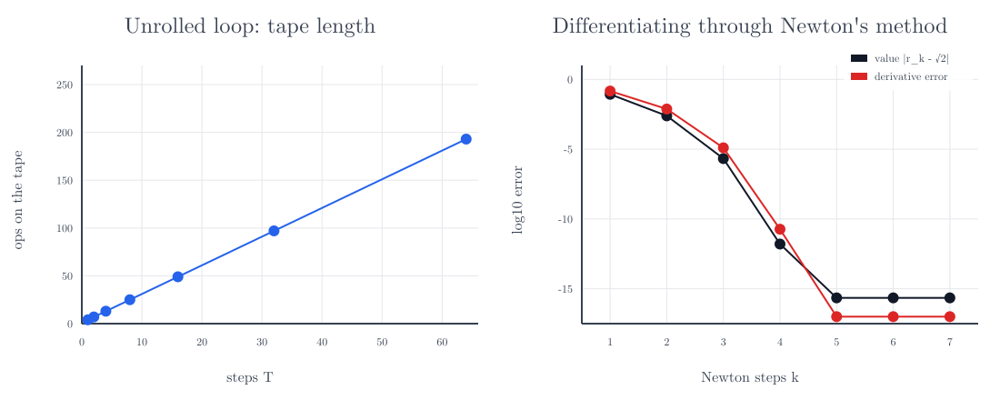
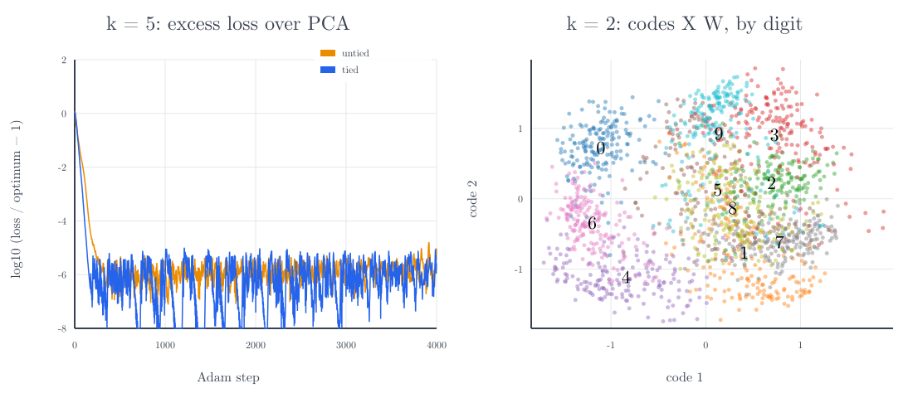

Building Computational Graphs: Names, Sharing, Order and Loops
Abstract
TensorFlow 1 built a model as a graph first and ran it later. datamunge::nn runs each operation as it is called and records a
tape only for gradients. This report shows what each graph-building concept becomes in eager code, and checks the mathematics
behind each. Scoped op names become parameter paths in a store, where asking for a name again means sharing the parameter.
A shared parameter's gradient is the sum of the gradients of its uses, which the theory derives and the
checks confirm to rounding error. Control dependencies become program order: the counter reads are 0, 0, 0, 1, 2, 3, 3, as in
TensorFlow. Construction errors are raised by the faulty call and leave later calls unaffected. The tape is always in topological
order. An unrolled loop of \(T\) steps records exactly \(3T+1\) operations, and a guarded one records none. A data-dependent Newton iteration for
\(\sqrt a\) records 17 to 44 operations depending on \(a\), and differentiating through it gives \(1/(2\sqrt a)\) to within \(2\times10^{-16}\).
The derivative converges as fast as the iterate, because the iteration map is flat at its fixed point. On the digits data, a linear
autoencoder whose encoder and decoder share one weight matrix reaches the PCA optimum, with
orthonormal columns and the PCA subspace to \(10^{-3}\), using half the parameters of an untied one.
The problem
A neural network is a composition of operations, and both training and inspection need that composition as data:
to differentiate it, to name and save its parameters, to share parameters between parts, and to reason about the order of
side effects. TensorFlow 1 made the graph explicit. A tensorflow::Scope named each op ("encoder/layer/Add_1"), placed it on a device,
attached control dependencies, and collected construction errors. A Session then ran parts of the finished graph. Eager libraries such as PyTorch and
datamunge::nn instead run each operation immediately ("define by run"). The only graph is the autograd tape that tensors requiring gradients record.
This report replaces the original example examples/nn/0_foundations/0.1_tensors_graphs_sessions/graph_construction.cpp. For each
TensorFlow concept it says what plays the same role in nn, and it checks the mathematics behind it: the multivariate chain rule for shared
parameters, the ordering of side effects, the size of the graph of a loop, and differentiation through data-dependent control flow.
The method
Graphs, static and dynamic
A computational graph is a directed acyclic graph whose nodes are operations and whose edges carry tensors. Evaluating it
requires a topological order, in which each node comes after all of its inputs. Differentiating it requires the reverse order.
A static graph is built once and can be inspected, optimised (common subexpressions merged, constants folded) and placed on
devices before it runs. A dynamic graph is the trace of one execution. Ordinary C++ control flow (if, for, while) decides which
operations run, so the graph may differ from call to call. nn::tape(outputs) returns that trace, listed from the output back to the leaves.
In that order every node precedes the nodes its inputs came from.
Names and scopes
In TensorFlow every op has a unique hierarchical name, and a repeated name is made unique ("block", "block_1"). In eager code only
parameters need stable names, for saving, loading, regularising and sharing. nn::ParameterStore::get(name, shape, init) creates a
parameter on first use and returns the same tensor on every later call. Prefixes such as "encoder/" play the role of scopes. A repeated
name therefore means the same parameter, not a new one. That is how layers share weights.
The gradient of a shared parameter
Suppose a parameter \(\theta\) is used in \(m\) places of a computation \(L=F(\theta,\theta,\dots,\theta)\). Write \(\theta^{(1)},\dots,\theta^{(m)}\) for the uses, as if they were separate copies, and set all of them equal to \(\theta\). By the multivariate chain rule,
A tape implements this sum automatically, because each use is an edge into the same leaf, and the leaf's accumulator adds every adjoint that reaches it. A tied autoencoder that encodes with \(W\) and decodes with \(W^\top\) gets the encoder's gradient plus the decoder's gradient.
Device placement
A context selects a backend and device before an eager operation runs. The example first requests CUDA strictly, then implements soft placement explicitly by probing CUDA and choosing CPU when it is unavailable. Each matrix multiplication runs where its inputs live. The program transfers both results to the CPU context for the final addition.
Control dependencies and side effects
In a static graph, operations without a data path between them may run in any order. A control dependency forces "run \(a\) before \(b\)" when
\(a\) has a side effect, such as an assignment, that \(b\) must observe. In eager code statements run in program order. A control dependency is
simply a statement written earlier, and its absence is a statement left out. Side effects on tensors (in-place updates such as add_) take
effect immediately.
Errors
A TensorFlow Scope keeps the first construction error, skips every later op, and refuses to serialise the graph. In eager code there is
nothing to poison. The faulty call throws an exception that names the shapes involved, and the next call runs normally.
Loops: unrolled and data-dependent
A loop in eager code records one copy of its body per iteration. A recurrence \(h_{s+1}=\tanh(Uh_s+x)\) run for \(T\) steps records \(T\) matrix products,
\(T\) additions and \(T\) tanh operations, so the tape and the memory of its saved tensors grow linearly in \(T\). This is backpropagation through time.
Under nn::NoGradGuard nothing is recorded.
A loop whose trip count depends on data is no harder: the tape records the iterations that ran. Newton's method for \(\sqrt a\), \(r_{k+1}=\Phi(r_k,a)=\tfrac12(r_k+a/r_k)\), stopped once \(\lvert r^2-a\rvert\le10^{-12}a\), is differentiable through the loop. The derivative of the iterate obeys
At the fixed point \(r^*=\sqrt a\), \(\Phi_r=0\), so the recursion forgets \(\mathrm dr_k/\mathrm da\) and gives \(\Phi_a(r^*,a)=1/(2\sqrt a)\). That is the implicit-function derivative \(\Phi_a/(1-\Phi_r)\). Near the fixed point \(\Phi_r\) is proportional to the error \(r_k-\sqrt a\), so the derivative's error is of the order of the iterate's error: it converges quadratically too. For an iteration with \(\Phi_r\ne0\) at its fixed point, the unrolled derivative would converge only linearly.
Simple examples
Names, sharing, a tape, order and errors
The program creates three parameters ("a", "encoder/w" and "block/k", the last asked for twice) and computes \(y=\sum\bigl[(h_2k)\cdot\mathbf 1_{1\times2}\bigr]w\) with \(h_2=a+2+3\) and \(w=I\). It then prints the tape and the gradients, runs the counter of TensorFlow's control-dependency example, and triggers a shape error.
#include <dm/dm.hpp>
namespace nn = dm::nn;
using nn::Tensor;
int main() {
// Names: parameters live in a store under path-like names; prefixes play the role of scopes.
nn::ParameterStore store(1);
Tensor a = store.get("a", {}, nn::init::constant(1));
Tensor w = store.get("encoder/w", {2, 2}, [](const nn::Shape&, nn::DType d, nn::Generator&) { return nn::tensor({{1, 0}, {0, 1}}, d); });
const Tensor b = nn::scalar(2), c = nn::scalar(3); // constants: no name, no history
const Tensor h1 = a + b, h2 = h1 + c;
// Asking for an existing name returns the same tensor: reuse, not a new "block_1".
Tensor p = store.get("block/k", {}, nn::init::constant(5));
Tensor q = store.get("block/k", {}, nn::init::constant(7)); // initialiser ignored
std::print("- parameters: {}\n", store.names());
std::print("- store.get(\"block/k\") twice: same tensor = {}, value {}\n", p.is_same(q), q.item());
std::print("- h1 = a + b records `{}`, h2 = h1 + c records `{}`, h2 = {}\n\n", h1.grad_fn_name(), h2.grad_fn_name(), h2.item());
const Tensor y = nn::sum(nn::matmul(nn::reshape(h2 * p, {1, 1}) * nn::ones({1, 2}), w));
std::vector<std::pair<Tensor, std::string>> names;
for (const auto& n : store.names()) names.emplace_back(store.at(n), n);
const auto t = nn::tape({y}, names);
std::print("{}\n", t.to_markdown());
const auto g = nn::grad(y, {a, p, w});
std::print("- y = {}; dy/da = {}, dy/d(block/k) = {}, dy/dw = {}\n\n", y.item(), g[0].item(), g[1].item(), g[2].values_str());
// Control dependencies are program order: a read placed after an increment sees it.
Tensor counter = nn::scalar(0, nn::DType::Int32);
auto inc = [&] { counter.add_(nn::scalar(1, nn::DType::Int32)); };
std::vector<int> reads;
for (int i = 0; i < 3; ++i) reads.push_back(counter.item<std::int32_t>());
for (int i = 0; i < 3; ++i) inc(), reads.push_back(counter.item<std::int32_t>());
reads.push_back(counter.item<std::int32_t>());
std::print("- counter reads: three plain, three after an increment, one plain: {}\n", reads);
namespace compute = dm::compute;
const compute::Device requested{compute::Backend::CUDA, 0};
const compute::Context cpu;
const auto a_cpu = nn::tensor({{1.f, 2.f}, {3.f, 4.f}}).to(cpu);
const auto on_cpu = nn::matmul(a_cpu, a_cpu);
const auto multiply = [&a_cpu](const compute::Context& place) {
const auto placed = a_cpu.to(place);
return nn::matmul(placed, placed);
};
try {
const auto strict = multiply(compute::Context(requested));
std::print("- strict CUDA placement ran on {}\n", compute::backend_name(strict.device().backend));
} catch (const std::exception& e) {
std::print("- strict CUDA placement failed: {}\n", e.what());
}
const auto available = compute::probe(requested).available;
const auto selected = available ? compute::Context(requested) : cpu;
const auto product = on_cpu + multiply(selected).to(cpu);
if (product.to_vector<float>() != std::vector<float>{14, 20, 30, 44})
throw std::runtime_error("unexpected placement example result");
std::print("- explicit fallback policy chose {}; sum of CPU and selected products: {}\n",
compute::backend_name(selected.device().backend), product.values_str());
// Errors are raised by the call that causes them; later calls are unaffected.
const Tensor m = nn::tensor({{1, 2, 3}, {4, 5, 6}});
try {
(void)nn::matmul(m, m);
} catch (const std::exception& e) {
std::print("- matmul([2, 3], [2, 3]): `{}`\n", e.what());
}
std::print("- the next call runs normally: neg(m) = {}\n", nn::neg(m).values_str());
}- parameters: ["a", "encoder/w", "block/k"]
- store.get("block/k") twice: same tensor = true, value 5
- h1 = a + b records
Add, h2 = h1 + c recordsAdd, h2 = 6
| Node | Operation | Shape | Inputs |
|---|---|---|---|
| Sum_10 | Sum | [] | BatchMatMulV2_9 |
| BatchMatMulV2_9 | BatchMatMulV2 | [1, 2] | Mul_7, encoder/w |
| encoder/w | Leaf | [2, 2] | |
| Mul_7 | Mul | [1, 2] | Reshape_6, const |
| Reshape_6 | Reshape | [1, 1] | Mul_5 |
| Mul_5 | Mul | [] | Add_3, block/k |
| block/k | Leaf | [] | |
| Add_3 | Add | [] | Add_2, const |
| Add_2 | Add | [] | a, const |
| a | Leaf | [] |
- y = 60; dy/da = 10, dy/d(block/k) = 12, dy/dw = [[30, 30], [30, 30]]
- counter reads: three plain, three after an increment, one plain: [0, 0, 0, 1, 2, 3, 3]
- strict CUDA placement failed: CUDA backend was not enabled at build time
- explicit fallback policy chose cpu; sum of CPU and selected products: [[14, 20], [30, 44]]
- matmul([2, 3], [2, 3]):
matmul: inner dimensions differ: [2, 3] @ [2, 3] - the next call runs normally: neg(m) = [[-1, -2, -3], [-4, -5, -6]]
By hand: \(h_2=1+2+3=6\), \(h_2k=30\), \((30,30)\,I=(30,30)\) and \(y=60\). The derivative \(\partial y/\partial a\) is \(k\) times the sum of the entries of \(w\), \(5\cdot2=10\).
Likewise \(\partial y/\partial k=h_2\cdot2=12\), and \(\partial y/\partial w_{ij}=30\) for every entry. The second get("block/k") returned the first tensor, with value 5, so its initialiser 7
was ignored. The tape lists ten nodes, output first. The constants 2, 3 and the ones matrix appear as const inputs, and the leaves carry their
parameter names, in place of TensorFlow's scoped op names. The counter reads 0, 0, 0, 1, 2, 3, 3, the sequence TensorFlow's example produces
with and without its control dependencies. The failing matmul names both shapes, and the next operation runs.
Checking the theory
Sharing, ordering, loops and Newton's method
The program checks four predictions:
- The gradient of a tied function equals the sum of the gradients of two untied copies set to the same values.
- The tape is in topological order.
- An unrolled recurrence records \(3T+1\) operations (with the final sum), and none under
NoGradGuard. - Differentiating through a converged Newton loop gives \(1/(2\sqrt a)\), with the derivative converging quadratically.
#include <dm/dm.hpp>
namespace nn = dm::nn;
using nn::Tensor;
int main() {
std::filesystem::create_directories("build");
const auto F64 = nn::DType::Float64;
// 1. A parameter used twice gets the sum of the gradients of its uses.
// f(W) = sum(tanh(x W) W^T): W appears in the encoder and, transposed, in the decoder.
nn::Generator gen(3);
const Tensor x = nn::normal({5, 4}, 0, 1, gen, F64);
const Tensor W0 = nn::normal({4, 2}, 0, 1, gen, F64);
auto W = W0.clone().requires_grad_();
const Tensor tied = nn::grad(nn::sum(nn::matmul(nn::tanh(nn::matmul(x, W)), nn::transpose(W))), {W})[0];
auto We = W0.clone().requires_grad_(), Wd = W0.clone().requires_grad_(); // two copies, equal values
const auto split = nn::grad(nn::sum(nn::matmul(nn::tanh(nn::matmul(x, We)), nn::transpose(Wd))), {We, Wd});
const double diff = nn::max(nn::abs(tied - (split[0] + split[1]))).item();
std::print("- tied gradient against encoder-copy + decoder-copy gradients: largest difference {:.1e}\n", diff);
// 2. The tape is in topological order: every node's inputs come after it.
const auto t = nn::tape({nn::sum(nn::matmul(nn::tanh(nn::matmul(x, W)), nn::transpose(W)))}, {{W, "W"}});
bool ordered = true;
for (const auto& node : t.nodes)
for (const auto& in : node.inputs) ordered = ordered && (!in || *in > node.id);
std::print("- tape of the tied function: {} ops, {} leaf; every input listed after its user: {}\n\n", t.op_count(), t.leaf_count(), ordered);
// 3. Unrolled loops: h_{s+1} = tanh(U h_s + x) for T steps records T copies of the step.
const Tensor U = nn::normal({8, 8}, 0, 0.3, gen, F64), xin = nn::normal({8, 1}, 0, 1, gen, F64);
std::vector<double> Ts, ops;
std::print("| steps T | ops on the tape | ops per step | ops with NoGradGuard |\n| ---: | ---: | ---: | ---: |\n");
for (int T : {1, 2, 4, 8, 16, 32, 64}) {
auto h = nn::zeros({8, 1}, F64).requires_grad_();
Tensor s = h;
for (int k = 0; k < T; ++k) s = nn::tanh(nn::matmul(U, s) + xin);
const auto tt = nn::tape({nn::sum(s)});
std::size_t guarded = 0;
{
nn::NoGradGuard g;
Tensor r = h;
for (int k = 0; k < T; ++k) r = nn::tanh(nn::matmul(U, r) + xin);
guarded = nn::tape({nn::sum(r)}).op_count();
}
Ts.push_back(T), ops.push_back(static_cast<double>(tt.op_count()));
std::print("| {} | {} | {:.2f} | {} |\n", T, tt.op_count(), (tt.op_count() - 1.0) / T, guarded);
}
// 4. Data-dependent control flow: Newton's iteration for sqrt(a), run until converged.
// The tape's length depends on a, and the gradient through the loop is d sqrt(a)/da.
std::print("\n| a | Newton steps | ops on the tape | d/da through the loop | 1/(2 sqrt a) | difference |\n| ---: | ---: | ---: | ---: | ---: | ---: |\n");
std::vector<double> ks, derr;
for (double av : {0.5, 2.0, 100.0, 1e6}) {
auto a = nn::scalar(av, F64).requires_grad_();
Tensor r = nn::scalar(1.0, F64) + 0.0 * a; // start at 1, attached to the tape
int steps = 0;
while (std::abs(r.item() * r.item() - av) > 1e-12 * av && steps < 100) r = 0.5 * (r + a / r), ++steps;
const double g = nn::grad(r, {a})[0].item(), exact = 0.5 / std::sqrt(av);
std::print("| {:g} | {} | {} | {:.15f} | {:.15f} | {:.1e} |\n", av, steps, nn::tape({r}).op_count(), g, exact, std::abs(g - exact));
}
// Error of the derivative after k Newton steps, for a = 2.
for (int k = 1; k <= 7; ++k) {
auto a = nn::scalar(2.0, F64).requires_grad_();
Tensor r = nn::scalar(1.0, F64) + 0.0 * a;
for (int j = 0; j < k; ++j) r = 0.5 * (r + a / r);
const double ev = std::abs(r.item() - std::sqrt(2.0));
const double ed = std::abs(nn::grad(r, {a})[0].item() - 0.5 / std::sqrt(2.0));
ks.push_back(k);
derr.push_back(std::log10(std::max(ed, 1e-17)));
std::print("{}k = {}: |r_k - sqrt 2| = {:.1e}, |dr_k/da - 1/(2 sqrt 2)| = {:.1e}\n", k == 1 ? "\n" : "", k, ev, ed);
}
auto left = dm::graphics::RPlot::create();
left.lines(Ts, ops, "", dm::graphics::RGB{37, 99, 235}, 2.0).points(Ts, ops, "", dm::graphics::RGB{37, 99, 235}, 6.0);
left.x_limits(0, 66).y_limits(0, 270).title("Unrolled loop: tape length").x_label("steps T").y_label("ops on the tape");
std::vector<double> vk, verr;
for (int k = 1; k <= 7; ++k) {
vk.push_back(k);
double r = 1;
for (int j = 0; j < k; ++j) r = 0.5 * (r + 2 / r);
verr.push_back(std::log10(std::max(std::abs(r - std::sqrt(2.0)), 1e-17)));
}
auto right = dm::graphics::RPlot::create();
right.lines(vk, verr, "value |r_k - √2|", dm::graphics::RGB{17, 24, 39}, 2.0).points(vk, verr, "", dm::graphics::RGB{17, 24, 39}, 6.0);
right.lines(ks, derr, "derivative error", dm::graphics::RGB{220, 38, 38}, 2.0).points(ks, derr, "", dm::graphics::RGB{220, 38, 38}, 6.0);
right.x_limits(0.5, 7.5).y_limits(-17.5, 1).title("Differentiating through Newton's method").x_label("Newton steps k").y_label("log10 error");
auto fig = dm::graphics::RLayout::create(1, 2);
fig.add(left);
fig.add(right);
fig.size(1100, 440).fit_panels();
fig.save_svg("build/graph_construction_loops.svg");
}- tied gradient against encoder-copy + decoder-copy gradients: largest difference 0.0e+00
- tape of the tied function: 5 ops, 1 leaf; every input listed after its user: true
| steps T | ops on the tape | ops per step | ops with NoGradGuard |
|---|---|---|---|
| 1 | 4 | 3.00 | 0 |
| 2 | 7 | 3.00 | 0 |
| 4 | 13 | 3.00 | 0 |
| 8 | 25 | 3.00 | 0 |
| 16 | 49 | 3.00 | 0 |
| 32 | 97 | 3.00 | 0 |
| 64 | 193 | 3.00 | 0 |
| a | Newton steps | ops on the tape | d/da through the loop | 1/(2 sqrt a) | difference |
|---|---|---|---|---|---|
| 0.5 | 5 | 17 | 0.707106781186547 | 0.707106781186547 | 0.0e+00 |
| 2 | 5 | 17 | 0.353553390593274 | 0.353553390593274 | 0.0e+00 |
| 100 | 8 | 26 | 0.050000000000000 | 0.050000000000000 | 0.0e+00 |
| 1e+06 | 14 | 44 | 0.000500000000000 | 0.000500000000000 | 2.0e-16 |
k = 1: r_k - sqrt 2 = 8.6e-02, dr_k/da - 1/(2 sqrt 2) = 1.5e-01 k = 2: r_k - sqrt 2 = 2.5e-03, dr_k/da - 1/(2 sqrt 2) = 7.6e-03 k = 3: r_k - sqrt 2 = 2.1e-06, dr_k/da - 1/(2 sqrt 2) = 1.3e-05 k = 4: r_k - sqrt 2 = 1.6e-12, dr_k/da - 1/(2 sqrt 2) = 1.8e-11 k = 5: r_k - sqrt 2 = 2.2e-16, dr_k/da - 1/(2 sqrt 2) = 0.0e+00 k = 6: r_k - sqrt 2 = 2.2e-16, dr_k/da - 1/(2 sqrt 2) = 0.0e+00 k = 7: r_k - sqrt 2 = 2.2e-16, dr_k/da - 1/(2 sqrt 2) = 0.0e+00

All four predictions hold.
- The tied gradient equals the sum of the encoder-copy and decoder-copy gradients exactly: the tape adds the same two products the copies compute.
- Every node of the tape is listed before its inputs.
- The recurrence records exactly three operations per step plus the final sum, from 4 operations at \(T=1\) to 193 at \(T=64\), and nothing under the guard.
- The Newton loop ran 5 to 14 times depending on \(a\), so its tape had 17 to 44 operations: 2 for the start, then 3 per iteration. The derivative through it matched \(1/(2\sqrt a)\) to every printed digit, and to \(2\times10^{-16}\) at \(a=10^6\).
For \(a=2\), the right panel shows the derivative error falling with the iterate's error: \(0.15,\;7.6\times10^{-3},\;1.3\times10^{-5},\;1.8\times10^{-11}\). Each is about the square of the previous one, as the analysis predicts, and it is exactly zero from \(k=5\). Differentiating a converged solver by unrolling it gave the implicit-function answer here, because \(\Phi_r(r^*)=0\).
A dataset: a tied-weight autoencoder for handwritten digits
The digits data hold 1797 images of \(8\times8\) pixels with intensities 0 to 16. They are scaled to \([0,1]\) and centred, giving a \(1797\times64\) matrix \(X\).
A linear autoencoder compresses each image to \(k\) numbers and reconstructs it. The tied version uses one parameter, autoencoder/W
(\(64\times k\)), both to encode, \(h=XW\), and to decode, \(\hat X=hW^\top\). The untied version has separate encoder/W and decoder/W. Both minimise the mean squared
reconstruction error with Adam (step 0.01, 4000 steps), from small orthogonal starting weights.
For a linear autoencoder the answer is known (Baldi and Hornik, 1989). The best rank-\(k\) reconstruction projects onto the span of the top \(k\) principal components, with mean squared error per pixel equal to the sum of the discarded eigenvalues of \(X^\top X/n\) divided by 64. For the tied model, \(\hat X=XWW^\top\) is a projection only if \(W^\top W=I\), so at the optimum the columns of \(W\) are orthonormal and span the principal subspace. The untied optimum needs only \(DE\) to be that projection, so \(E\) on its own has no reason to be orthonormal.
#include <dm/dm.hpp>
namespace nn = dm::nn;
using nn::Tensor;
int main() {
std::filesystem::create_directories("build");
const auto F64 = nn::DType::Float64;
// 1797 digits, 64 pixels scaled to [0, 1] and centred.
const auto digits = dm::datasets::digits();
const std::int64_t n = 1797, d = 64;
std::vector<double> v(static_cast<std::size_t>(n * d));
for (std::int64_t j = 0; j < d; ++j) {
const auto c = digits.get_column<double>(std::format("pixel_{}", j)).values();
const double m = std::accumulate(c.begin(), c.end(), 0.0) / n / 16.0;
for (std::int64_t i = 0; i < n; ++i) v[i * d + j] = c[i] / 16.0 - m;
}
const auto label = digits.get_column<double>("digit").values();
const Tensor X = nn::from_vector(v, {n, d});
// PCA from the eigen-decomposition of the covariance X^T X / n (eigenvalues ascending).
const auto eig = nn::eigh(nn::matmul(nn::transpose(X), X) / static_cast<double>(n));
const auto lambda = eig.e.to_vector<double>();
const double total = std::accumulate(lambda.begin(), lambda.end(), 0.0);
std::print("| k | tied: loss | untied: loss | PCA optimum | tied: largest entry of WᵀW − I | untied: largest entry of EᵀE − I | tied: subspace distance to PCA | parameters tied / untied |\n");
std::print("| ---: | ---: | ---: | ---: | ---: | ---: | ---: | ---: |\n");
std::vector<std::vector<double>> curves;
Tensor codes2;
for (std::int64_t k : {2, 5, 10}) {
double optimum = 0; // mean squared error per entry = sum of the discarded eigenvalues / d
for (std::int64_t j = 0; j < d - k; ++j) optimum += lambda[j];
optimum /= d;
// Tied: one parameter, used as the encoder W and (transposed) as the decoder.
nn::ParameterStore tied_store(7, F64);
const Tensor W = tied_store.get("autoencoder/W", {d, k}, nn::init::orthogonal(0.1));
nn::Optimizer tied_opt(tied_store, 0.01, {.kind = nn::OptimizerKind::Adam});
// Untied: separate encoder and decoder.
nn::ParameterStore untied_store(7, F64);
const Tensor E = untied_store.get("encoder/W", {d, k}, nn::init::orthogonal(0.1));
const Tensor D = untied_store.get("decoder/W", {k, d}, nn::init::orthogonal(0.1));
nn::Optimizer untied_opt(untied_store, 0.01, {.kind = nn::OptimizerKind::Adam});
std::vector<double> curve;
double lt = 0, lu = 0;
for (int step = 0; step < 4000; ++step) {
const Tensor tied_loss = nn::mean(nn::square(nn::matmul(nn::matmul(X, W), nn::transpose(W)) - X));
tied_opt.step(nn::grad(tied_loss, {W}));
const Tensor untied_loss = nn::mean(nn::square(nn::matmul(nn::matmul(X, E), D) - X));
untied_opt.step(nn::grad(untied_loss, {E, D}));
lt = tied_loss.item(), lu = untied_loss.item();
if (k == 5) curve.push_back(std::log10(lt / optimum - 1 + 1e-12)), curve.push_back(std::log10(lu / optimum - 1 + 1e-12));
}
if (k == 5) curves.push_back(curve);
nn::NoGradGuard guard;
const Tensor WtW = nn::matmul(nn::transpose(W), W);
const double orth = nn::max(nn::abs(WtW - nn::eye(k, F64))).item();
const double orth_e = nn::max(nn::abs(nn::matmul(nn::transpose(E), E) - nn::eye(k, F64))).item();
// Projector onto span(W) against the projector onto the top-k eigenvectors.
const Tensor P = nn::matmul(W, nn::solve(WtW, nn::transpose(W)));
const Tensor V = nn::slice(eig.v, {0, d - k}, {d, k});
const double dist = nn::max(nn::abs(P - nn::matmul(V, nn::transpose(V)))).item();
std::print("| {} | {:.6f} | {:.6f} | {:.6f} | {:.1e} | {:.2f} | {:.1e} | {} / {} |\n", k, lt, lu, optimum, orth, orth_e, dist, d * k, 2 * d * k);
if (k == 2) codes2 = nn::matmul(X, W);
}
std::print("\nTotal variance per pixel {:.5f}; the top 2, 5 and 10 components keep {:.1f}%, {:.1f}% and {:.1f}% of it.\n", total / d,
100 * (lambda[63] + lambda[62]) / total,
100 * std::accumulate(lambda.end() - 5, lambda.end(), 0.0) / total,
100 * std::accumulate(lambda.end() - 10, lambda.end(), 0.0) / total);
auto left = dm::graphics::RPlot::create();
std::vector<double> steps, ct, cu;
for (std::size_t s = 0; s < curves[0].size() / 2; ++s) {
steps.push_back(static_cast<double>(s));
ct.push_back(std::clamp(curves[0][2 * s], -8.0, 2.0));
cu.push_back(std::clamp(curves[0][2 * s + 1], -8.0, 2.0));
}
left.lines(steps, cu, "untied", dm::graphics::RGB{234, 140, 0}, 1.5);
left.lines(steps, ct, "tied", dm::graphics::RGB{37, 99, 235}, 1.5);
left.x_limits(0, 4000).y_limits(-8, 2).title("k = 5: excess loss over PCA").x_label("Adam step").y_label("log10 (loss / optimum − 1)");
auto right = dm::graphics::RPlot::create();
const auto cv = codes2.to_vector<double>();
// A qualitative palette, half transparent so the digit labels stay readable.
const std::vector<dm::graphics::RGB> pal{{31, 119, 180, 0.45}, {255, 127, 14, 0.45}, {44, 160, 44, 0.45}, {214, 39, 40, 0.45},
{148, 103, 189, 0.45}, {140, 86, 75, 0.45}, {227, 119, 194, 0.45}, {127, 127, 127, 0.45},
{188, 189, 34, 0.45}, {23, 190, 207, 0.45}};
for (int digit = 0; digit < 10; ++digit) {
std::vector<double> cx, cy;
for (std::int64_t i = 0; i < n; ++i)
if (label[i] == digit) cx.push_back(cv[2 * i]), cy.push_back(cv[2 * i + 1]);
right.points(cx, cy, "", pal[digit], 2.5);
}
for (int digit = 0; digit < 10; ++digit) {
double sx = 0, sy = 0, m = 0;
for (std::int64_t i = 0; i < n; ++i)
if (label[i] == digit) sx += cv[2 * i], sy += cv[2 * i + 1], ++m;
right.text(sx / m, sy / m, std::to_string(digit), dm::graphics::RGB{0, 0, 0}, 22.0);
}
double lo = 0, hi = 0;
for (double e : cv) lo = std::min(lo, e), hi = std::max(hi, e);
right.x_limits(lo - 0.1, hi + 0.1).y_limits(lo - 0.1, hi + 0.1).title("k = 2: codes X W, by digit").x_label("code 1").y_label("code 2");
auto fig = dm::graphics::RLayout::create(1, 2);
fig.add(left);
fig.add(right);
fig.size(1100, 480).fit_panels();
fig.save_svg("build/graph_construction_autoencoder.svg");
}| k | tied: loss | untied: loss | PCA optimum | tied: largest entry of WᵀW − I | untied: largest entry of EᵀE − I | tied: subspace distance to PCA | parameters tied / untied |
|---|---|---|---|---|---|---|---|
| 2 | 0.052426 | 0.052426 | 0.052426 | 1.5e-05 | 0.10 | 5.9e-04 | 128 / 256 |
| 5 | 0.033369 | 0.033369 | 0.033369 | 2.6e-04 | 0.09 | 5.0e-04 | 320 / 640 |
| 10 | 0.019197 | 0.019197 | 0.019196 | 2.8e-04 | 0.13 | 3.1e-04 | 640 / 1280 |
Total variance per pixel 0.07333; the top 2, 5 and 10 components keep 28.5%, 54.5% and 73.8% of it.

Both models reach the PCA optimum, to six decimals for \(k=2\) and 5 and to one unit in the sixth for \(k=10\). The tied model gets there with half the parameters (128 against 256 for \(k=2\)), and, as the theory requires, its \(W^\top W\) is the identity to \(2\times10^{-4}\). Its projector agrees with the projector onto the top \(k\) eigenvectors to \(8\times10^{-4}\) in every entry. The untied encoder's \(E^\top E\) is 0.09 to 0.13 away from the identity: the same loss, reached with a non-orthonormal encoder. The remaining excess loss, \(10^{-8}\) to \(10^{-5}\) relative, is Adam's noise at a constant step, not a different solution. Two numbers keep 28.5% of the pixel variance, and they already separate 0, 6, 4, 3 and 2 from each other, while 5 and 8 overlap in the middle. Ten numbers keep 73.8%. The sharing itself needed nothing but asking the store for one name and using the tensor twice. The tape summed the encoder's and decoder's contributions, as the first check confirmed.
Conclusion
In eager code a computational graph is a by-product: the tape that one execution records for differentiation. Every static-graph concept
has a simpler counterpart. Op names become parameter paths. Scopes become prefixes. Reuse by name becomes weight sharing, with gradients summed over
uses by the multivariate chain rule. Control dependencies become statement order, and the construction errors of a sticky scope become exceptions at the faulty call.
Dynamic graphs make loops and data-dependent control flow ordinary C++. The price is that the tape grows with every iteration, linearly for an unrolled
recurrence, and that nothing can be optimised before it runs. A loop that need not be differentiated should run under NoGradGuard.
The checks confirmed each piece exactly where exact answers exist. A tied gradient equalled the sum of its parts. A loop of \(T\) steps recorded \(3T+1\) operations. Differentiating through a converged Newton solver gave the implicit-function derivative, with the derivative converging quadratically because the iteration is flat at its fixed point. On the digits data, sharing one matrix between encoder and decoder halved the parameters, reached the PCA optimum, and forced the orthonormal columns that the untied model lacked.
References
- M. Abadi et al. (2016). "TensorFlow: a system for large-scale machine learning". OSDI, 265–283.
- A. Paszke et al. (2019). "PyTorch: an imperative style, high-performance deep learning library". NeurIPS 32, 8024–8035.
- A. Griewank and A. Walther (2008). Evaluating Derivatives, 2nd edition, chapter 15 (differentiating fixed-point iterations). SIAM. doi:10.1137/1.9780898717761
- P. J. Werbos (1990). "Backpropagation through time: what it does and how to do it". Proceedings of the IEEE 78(10), 1550–1560. doi:10.1109/5.58337
- P. Baldi and K. Hornik (1989). "Neural networks and principal component analysis: learning from examples without local minima". Neural Networks 2(1), 53–58. doi:10.1016/0893-6080(89)90014-2
- D. P. Kingma and J. Ba (2015). "Adam: a method for stochastic optimization". ICLR. arXiv:1412.6980
- E. Alpaydin and C. Kaynak (1998). "Optical recognition of handwritten digits". UCI Machine Learning Repository. doi:10.24432/C50P49